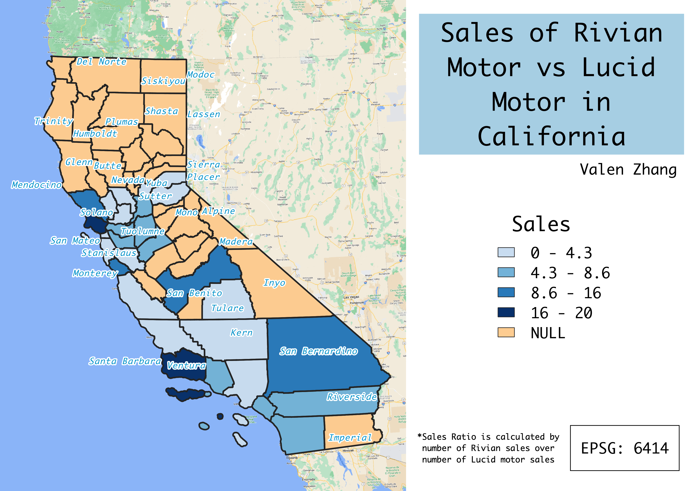

Homework 7: Rivian Motor vs Lucid Motor Sales in California
Valen Zhang
Rivian and Lucid are two Americian EV manufacturer founded in California. While both are EVs, Rivian is
selling pick up truck, and Lucid focuses on luxury sedan. Since I am really interested in purchasing
stocks from the two companies, I decided to do a choropleth of their sales data in 2022 and see which
company is doing better. As Rivian Motor have larger sales data, I used Rivian as the numerator, and
number of Lucid Motor sales as the denominator.
Unfortunately, even though California is the state where they were founded, neither Lucid nor Rivian
sold their vehicles to all the counties in California. Therefore, as shown in the map, there are
some missing data marked in Orange.

Interactive Map
Interactive Map
Data used for this project
Original CSV dataset
Cleaned CSV dataset: Rivian Motor
Cleaned CSV dataset: Lucid Motor
Link to county boundaries shapefile
Sales Shapefile